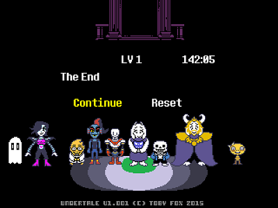

Undertale egy Toby Fox által fejlesztett szerepjáték, melyben egyedül Temmie Chang nyújtott neki segítséget a program arculatában. 2015. szeptember 15-én lett kiadva Microsoft Windows és Mac OS X-re, majd Linuxra 2016. július 17-én. A játék túlnyomó részben pozitív fogadtatásban részesült.
Története
Réges régen a Földet két faj uralta, az emberek és a szörnyek. Ám ez megváltozott a közöttük kirobbant háború miatt, amit végül az emberek nyertek meg. A leghatalmasabb varázslóik száműzték a szörnyeket a föld alá, és egy mágikus gáttal akadályozták meg, hogy újra a felszínre jöhessenek. Viszont ez a gát megtörhető volt.
Legendák szóltak az Ebott hegységről, miszerint aki megmássza, soha többé nem tér vissza. Sok évvel később, egy gyermek követte a történetek fonalát, és feljutott a hegy tetejére. Ott talált egy hatalmas és mély szakadékot, amibe beleesett. Itt kezdődik a történet.
Az első helyszín a Ruins, ahol a főszereplő a zuhanás után nem sokkal találkozik Flowey-val, egy virággal, aki megpróbálja megölni a gyermeket a saját szórakoztatására. Végül egy Toriel nevű, kedves szörny menti meg. Az anyáskodó lény végül megtanítja a főszereplőt hogyan fejtse meg a rejtvényeket, és hogyan oldja meg a konfliktusokat itt a föld alatt. Csak azután engedi a gyermeknek hogy a történet következő helyszínére érjen, miuán megküzdött vele, és bizonyította rátemrettségét.

Főmenü
Játékmenet
A harcok folyamata körökre van bontva, ahol a piros szívként ábrázolt főszereplő lelkével kell törekedni arra, hogy az ellenféltől kapott támadásokat kikerülje/kivédje. Ahogy haladunk előre a játékban, úgy ismerkedünk meg új elemekkel, mint például a szív más színezése következtében a támadások csak akkor kivédhetőek, ha nem mozdulunk, vagy ha éppen folyamatos mozgásban vagyunk, valamint néhány főellenség esetén maga az irányítás is megváltozik. Amikor a játékos köre van, lehetősége van arra, hogy harcoljon, valamilyen cselekvéseket végezzen, amelyek megváltoztatják az ellenfél hozzáállását, tárgyakat használjon, és hogy megkegyelmezzen. Utóbbi befejezi a küzdelmet, ha a megfelelő cselekvések megtörténtek. Ha megölünk egy ellenfelet, az EXP és LV jutalmat ad, de egyiket sem kapja meg a főszereplő, ha megkegyelmezett. Viszont aranyat mindkét esetben kaphat.
Nagy szerepe van annak, hogy a játékos milyen döntéseket hoz egy-egy küzdelem alkamával. Az ölések és kegyelmezések száma határozza meg, hogy melyik játékvéget kapjuk meg. Ennek függvényében akár egyetlek haláleset nélkül is végigvihető a játék. Sok puzzle-t tartalmaz, amit a játékosnak meg kell oldania, hogy haladhasson a történetben. A szörnyek elleni harcok is tekinthetőek puzzle-nek, mivel csak a megfelelő egymásutáni cselekedettel lehet a küzdelmet békésen lezárni.
A videó tartalmilag maga a játék előzetese. Szemlélteti a játékmenetet, a játék irányítását, utal a történetre, valamint a harcokba és a rejtvényekbe is betekintést ad.